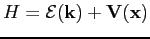

Next: Initial Conditions
Up: The Particle Dynamics
Previous: The Band Structure
Contents
As seen previously, an electron moving in a crystal lattice moves just like a free electron, but with a change of mass. This fact justify us to use the classical equations of motion, in order to describe the motion of electrons and holes in a semiconductor device. We can, thus, use the Hamilton formalism to get the electron equations of motion. They read as follow
where  is the Hamiltonian of the system, i.e.
is the Hamiltonian of the system, i.e.

Then, if we use the Kane dispersion relation, we get, after some simple algebra, the following expression for the electron velocity
Didier Link
2007-05-18